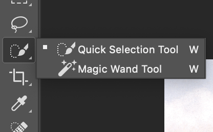
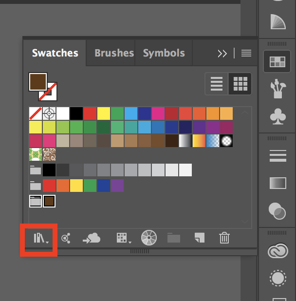
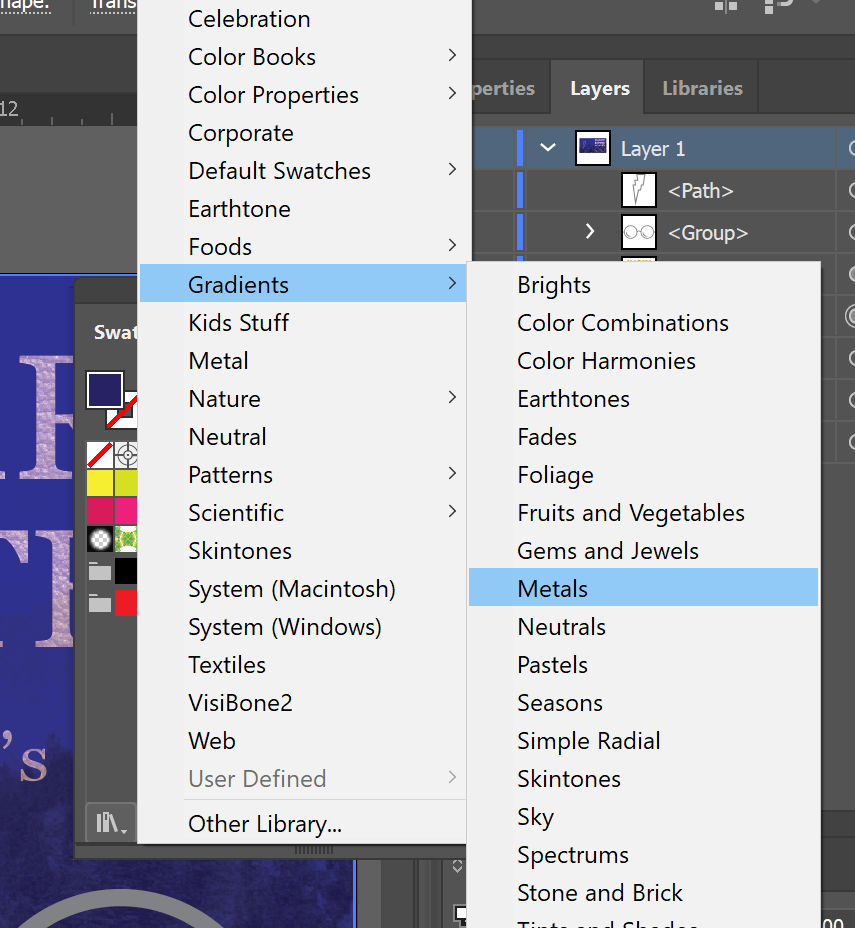
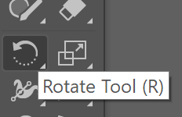

This manual teaches some of the tools and techniques that are helpful for work in graphic design when using Adobe Photoshop and Illustrator. It is not a comprehensive guide to the programs, but it introduces a number of important features that you are likely to encounter when doing the work of a graphic designer.
Some of the things covered include:
Basic Editing in Photoshop
Using the Quick Selection Tool and Masking
Creating artboards in Illustrator
Importing images from external sources
Working with type
Creating and modifying shapes
Creating clipping masks from type and shapes
Changing the appearance of objects with Strokes and Fills
In this manual, we will walk through the creation of a basic book cover, adding type, shapes, and imported images to complete our design.
Download the Class Files
Download the Class Files from the link above. If you are using Mac iOS, just click once on the downloaded file to use it. If you are using Windows, make sure to Extract the files by double clicking on the downloaded zip file and clicking "Extract" near the top of the pop-up window.
.
Editing Basics in Adobe Photoshop
Adobe Photoshop is an excellent software to edit the appearance of raster images such as JPEG and PNG files. We will begin our example project by adding a Layer Mask and Adjustment Layers to edit the brightness/contrast, levels, hue/saturation, and color of our background image.
Opening a File in Photoshop
Before any editing can be accomplished, you first have to bring in an image file to Photoshop!
After opening Adobe Photoshop, go to File > Open... and find the image titled castle.jpg in the folder you downloaded
Click Open
Navigate to the Layers Panel on the right side of your work station and double click on the Background layer and name it "Castle". If for any reason your Layers Panel isn't visible, from the Menu Bar, go to Windows > Layers to reveal it.
From the Menu Bar, go to Image > Mode > CMYK Color. This will ensure that we are working with correct color mode for printing.
Using the Quick Selection Tool and Adding a Layer Mask
Quick Selection Tool
The Quick Selection Tool allows you to "paint" a selection using a round brush tip. This tool automatically finds the edges within an image which makes it easier to select specific areas.
To adjust the size of the brush, click on either [ to decrease and ] to increase
To deselect an area, click on Alt/Option while dragging the tool.
If it doesn't appear in the Tools Panel, hold down the Magic Wand Tool to reveal the Quick Selection Tool

Select the Quick Selection Tool from the Tools Panel (you may have to hold down the Magic Wand Tool to reveal it)
Select everything in the image except for the sky - notice how the selection expands to the edges automatically! If you accidently select part of the sky hold down Ctrl/Cmd while dragging over the area to deselect it. Remember to adjust the size of the brush as needed by clicking either [ or ]
Once you have everything but the sky selected, navigate to the bottom of the Layers Panel and click on the Layer Mask button (rectangle with a circle in it) to "hide" everything not selected
Layer Mask
A Layer Mask allows for non-destructive editing to occur to an image. We can "hide" or "reveal" certain parts of an image without making permanent changes to the original. Use the Brush Tool with a black fill on a Layer Mask to "erase" parts of an image. Switch to a white fill to bring back parts of the original image.
To adjust the edges of the selection so they're more or less defined, click on Select and Mask from the top bar and in the Properties Panel on the right side, adjust the Transparency and smooth or feather the selection as needed
Adding Adjustment Layers
Adjustment layers allow us to edit the colors, brightness, and contrast of our image non-destructively. Similarly to a Layer Mask, adding an Adjustment Layer will allow our original image to stay intact while the edits are made on separate layers. All of the Adjustment Layers can be found in the Menu Bar at the top under Layers > Adjustment Layer or at the bottom of the Layers Panel under the icon that looks like a circle filled in with grey and white.
Brightness/Contrast
Adjust the light and shadows in an image with this Adjustment Layer. Make dark images brighter or light images darker.
Go to Layers > Adjustment Layers > Brightness/Contrast... or click on the circle icon on the bottom of the Layers Panel and choose Brightness/Contrast...
From the Properties Panel adjust the Brightness to 15 and the Contrast to 30. If this panel doesn't appear, double click on the little sun icon on the Brightness/Contrast layer
Levels...
This tool has the ability to correct tonal range and color balance of an image by adjusting the shadows, midtones, and highlights
Go to Layers > Adjustment Layers > Levels... or click on the circle icon on the bottom of the Layers Panel and choose Layers...
From the Properties Panel adjust the shadow input level to 30, the midtone input level to 1, and the highlight input level to 240. If this panel doesn't appear, double click on the levels icon on the Levels layer
Hue/Saturation
This tool allows you to recolor your image, increase or decrease the intensity of specific colors within an image, and/or lighten or darken your image overall.
Go to Layers > Adjustment Layers > Hue/Saturation... or click on the circle icon on the bottom of the Layers Panel and choose Hue/Saturation...
From the Properties Panel adjust the hue to 170 and leave the saturation and lightness at 0. If this panel doesn't appear, double click on the icon next to the eyeball on the Levels layer. Adjusting the Hue will change the overall color, which adjusting the Saturation will change the intensity of the Hue selected. Lightness will change how bright such hue and saturation appears
Black & White
As the name suggests, this adjustment is to make your image black and white. This option is only available in the RGB Color Mode, so go to Image > Mode > RGB Color before you begin. Note that if you made any other color adjustments prior to this in CMYK mode, your image's colors will change after you change to RGB
Go to Layers > Adjustment Layers > Black & White... or click on the circle icon on the bottom of the Layers Panel and choose Black & White...
From the Properties Panel adjust accordingly! If this panel doesn't appear, double click on the icon that looks like a rectangle filled with grey and white on the Black and White layer
For our example project, we will NOT adjust our image to RGB and Black and White.
Saving and Exporting
Saving as a Photoshop File (.psd)
Saving your project as a Photoshop File allows you the opportunity to come back and change or remove any layers with different edits. This file can only be opened on computers that have Adobe Photoshop installed.
Go to File > Save As...
Give your project an appropriate name. For this project, name it castle
Specify the location (Desktop or specific folder) you would like to save it in
Select "Photoshop" as the Format and make sure "Layers" is checked
Click Save
For this example, we will use this file when transitioning into Illustrator!
Exporting as a JPEG or PNG
Exporting your Photoshop project as a JPEG or PNG allows you to share your image to everyone on the internet - even if they don't have Photoshop.
Go to File > Export... > Export As...
Select "JPEG" or "PNG" for the Format
Click "Export All..."
Give your project an appropriate name
Specify the location (Desktop or specific folder) you would like to save it in
Click Save
For this example, we will not save as a JPEG or PNG
Starting a New Project in Illustrator
In Illustrator, a project consists of one or more artboards. When you start a new project, you will create an artboard
Create a New Document by selecting File > New... (or the keyboard shortcut: Cmd + N on a Mac or Ctrl + N on Windows).
Click the Print preset and enter the following settings:
Width: 15 inches
Height: 10 in
Number of Artboards: 1
Color Mode: CMYK Color
When you are done, you should have a blank project that looks similar to the following:
To add additional Artboards to change the size or arrangement of the artboards in your project, use the Artboard tool (keyboard shortcut: Shift + O).
Add The Control Panel
Add the Control Panel to your workspace by going to Window > Control Panel. This will bring up more tools for us to work with on Illustrator. Notice that the Control Panel will change according to the Tool we are selected on.
Add Guides
To make managing your project easier, we will add guides for a visual reference so we can get a sense for where the back cover, spine, and front cover will be on the artboard.
Enable Rulers by choosing View > Rulers > Show Rulers or using the shorcut Cmd + R (Mac) or Ctrl+R (Windows)
To create a guide, click and hold on the left ruler and drag to the 7 inch mark.
To make sure the guide is at exactly 7 inches, use the Transform option at the top of the screen from the Control Panel. If you do not see the Transform controls, click the word Transform or open the Transform panel by going to Window > Transform.
Set the X value to 7 inches
If the Transform options are greyed-out, your guide might be locked. To unlock them, go to View > Guides > Unlock Guides
Repeat this and create a second guide at the 8 inch mark.
When you are done, lock the guides via View > Guides > Lock Guides
guides > lock guides">
Creating the Book Background
Placing an Image or Project in Illustrator
The Adobe Create Cloud does a great job at allowing users to integrate projects from one software to another. By importing a Photoshop project into Illustrator rather than a raster image saved from a Photoshop project, we can be certain that any future changes made to the Photoshop project will also update in our Illustrator file.
For this example we will be bringing in the castle.psd file we were working on earlier.
First zoom out (Ctrl -/Cmd -) of your artboard enough so there is a lot of grey area around it. This will make placing your image easier.
Then go to File > Place (Cmd + P/Ctrl + P) and for this example, choose castle.psd. Click and drag until the image covers the entire artboard.
(Don't worry if it is outside the edge of the artboard - we take care of this in the next step)
You can also choose to place any raster image in your project if you did not edit anything in Photoshop.
Making a Clipping Mask (Cropping an Image)
If your image is too large, you may want to add a Clipping Mask. This will crop you image non-destructively. This means that if you can always go back to the original file by right-clicking and (Control + Mouse Click for some Macs) selecting "Release Clipping Mask"
Resize or move your image to your liking with the Selection Tool V
Using the Rectangle Tool (R), draw a rectangle that is the same size as our artboard. The rectangle's fill color does not have to be any specific color.
Using the Selection Tool (V), drag a selection box over the rectangle and picture to select both of the objects.
You can also select both objects by first expanding Layer 1 from the Layers Panel and clicking the circles next to each object's sublayer while holding down Ctrl/Cmd
With both layers selected, either Right Click > Make Clipping Mask or go to Object > Clipping Mask > Make
to crop the picture to the size of the rectangle.
Blend Modes
Blend modes change how a layer affects the appearance of the layers below it. Open the Appearance Panel by going to Window > Appearance. Click on the word Opacity
Some of the more commonly used blend modes:
Normal: does not affect the layer underneath.
Multiply: Darkens the pixels underneath it
Overlay: Give the pixels beneath the color of the selected layer
Color Burn/Saturate: Intensify the colors underneath the layer
Adding a Blue Appearance
Using the Rectangle Tool (R), create a rectangle the size of your artboard. Double-click on the Fill Color from the bottom of the Tools Panel and change the color to a dark blue of your choice. In the below example we used the color with hexcode #1B1066
After you've created the rectangle and given it a blue fill color, go to the Layers Panel and make sure the sublayer is above the Clip Group.
Using the Selection Tool (V), select the blue rectangle, open the Appearance panel (Window > Appearance), and click the word Opacity at the bottom.
Click the dropdown that says Normal and change this to Multiply.
Notice how the appearance of the castle layer changes!
After you add the Multiply blend mode to the blue rectangle, go to the Layers Panel and lock the layer to avoid accidentally making any changes to it by clicking on the empty space between the eyeball and layer title. A small lock graphic should appear when you click indicating that it is locked and cannot be manipulated!
Working With Type
Type is one of the main tools you are likely to work with when designing this project. The Character Panel in Illustrator allows you to adjust font presentation when working with the Type Tool.
Using the Type Tool and Character Panel
Go to Window > Type > Character to open the Character Panel. We will be using this panel to change the font size, leading, and tracking. Leading is the space between lines of text and Tracking is the space between characters in a text.
Select the Type tool from the Tools Panel (T).
Click and drag a text box on "front cover" (the right side of the artboard) and type: HARRY POTTER [line break] and the [line break] Philosopher's Stone
Manually adding the line breaks (with Enter/Return) will make it easier to adjust the individual lines of text later in the project.
Select all the text by hitting Ctrl + A/Cmd + A or by clicking and dragging to highlight the text. From the Control Panel at the top of the screen, or from the Character Panel, change the font to Georgia
Select just the word HARRY and set the font size to 105pt and tracking to 60
Highlight the word POTTER and change the font size to 100pt and leading to 100pt
Notice how "HARRY" and "POTTER" are aligned with one another because we increased the size and tracking slightly for "HARRY". Also notice how the vertical spacing between lines of text lessened when we changed the leading of "POTTER" to a smaller number. Fun note: leading is pronounced "ledding," which is a throwback to the days of the printing press: the small pieces of metal they used to adjust line spacing were made out of lead.
Highlight and the and change the font size to 25pt and leading to 35
Next, open the Paragraph panel and change the Left Indent to 300pt
Select "The Philosopher's Stone" and change the font size to 40pt, leading to 45pt, and tracking to 65
Using the Selection Tool (V), resize the text box to be the width of the text and move the box to be centered on the right side of the artboard.
Creating A Clipping Mask For Text
Once we have the text sized and arranged the way we'd like, we'll create a clipping mask to give it a leather texture.
Go to File > Place and select the leather.jpg image from the class files you downloaded earlier. Click and drag the image so that it covers all of the text. We will use this textured image to create a clipping mask with the text.
From the Layers Panel, move the text sublayer to be above the leather.jpg image
Using the Selection Tool (V), select both the text and leather texture image while holding down Shift
Right Click > Make Clipping Mask or go to Object > Clipping Mask > Make
Using the Selection Tool, select the text and use the Appearance Panel to change the blend mode from Normal to Screen to make the text appear paler.
Bonus:
To make the text stand out even more, click on the fx button from the Appearance Panel to add a Layer Effects like the Warp modes to make the text curve or ripple.
Working with Shapes
Next, we're going to build visual elements using simple shapes to create Harry's glasses and a lightning bolt.
Creating Harry's Glasses
To get started, let's change our stroke color and stroke width.
Make sure no objects are selected (click on the grey area around the canvas with the Selection ToolV) and change the Stroke's color and width from the Control Panel at the top:
Fill color: None
Stroke color: Light Grey
Stroke Width: 10pt
Using the Ellipse Tool (L)
Select the Ellipse ToolL from the Tools Menu. If you don't see it, click and hold down the Rectangle tool to reveal more shapes.
Click and drag on your canvas to form an ellipse. Remember to hold down Shift to create a perfect circle.
We're going to make a copy of this circle and paste it exactly on top of the other so we can resize it to make a smaller, inner circle.
Select the circle with the Selection ToolV
Go to Edit > Copy to make copy of the circle
Go to Edit > Paste In Place to paste the copy right on top of the original circle. (Note that you won't see a difference right away after you paste in place.)
After pasting in place, resize the second circle to be smaller and inside the first. Do this with the Selection ToolV and drag the handles at the edge of the bounding box to resize while holding down Shift and Alt/Option until you let go of the mouse click.
Holding Shift will resize will keeping the original shape
Dragging while holding Alt/Option will resize while keeping the center of the circle in place.
Using the Scissors Tool (C)
We only want the lower left part of the inner circle, so we're going to use the Scissors Tool to break apart the inner shape.
Select the Scissors ToolC. It is one of the shapes underneath the Eraser tool:
With the Scissors Tool, click the Left and Bottom anchor points to separate the circle into two parts. Then, use the Selection Tool V to select the upper-right part of the circle and hit Delete or Backspace to remove it.
Using the Width Tool (Shift + W)
Next, we're going to use the Width Tool to adjust our inner circle's stroke in interesting ways.
Select the Width ToolShift + W from the Tools Panel:
Using the Width Tool, click and drag the end of the inner circle to narrow the stroke width for that part of the line:
Drag the middle part of the line so it is wider than the end:
Finally, drag the other end so the line tapers off:
Completing the Glasses
The next step is to make a copy of this first lens.
Using the Selection ToolV, hold down Shift and select both the outer circle and inner line.
Click and drag the shapes while holding Alt/Option and Shift to make a copy that is perfectly aligned with the original.
After making the copy, we're going to use the Pen toolP to create a line between them for the nose piece.
Click once on the left lens to start the curve, then click and drag down and to the right on the right lens to create the curved line. Hit Enter to complete the line
Next, use the Ellipse toolL to create small perfect circles for the earpieces. Remember to use Shift and Alt/Option to drag an aligned copy of the first circle
Grouping Objects
Use the Selection ToolV click all of the pieces of the glasses and group them by choosing Object > Group or Right-Click > Group (Cmd + G/Ctrl + G) and align the group under the text.
Using Image Trace to Create a Lightning Bolt
Illustrator gives you the option to vectorize a raster image such as a scanned image through the "Image Trace" option. We will place our scanned image of a hand drawn lightning bolt into Illustrator and image trace it so that we can edit it further.
Image Tracing and Expanding
Go to File > Place and select the scanned.jpg image from the class files you downloaded earlier
Drag the image out on your canvas
From the Control Panel above, click on Image Trace
Click on the Image Trace Panel icon to open the settings
Check "Preview" to be able to preview your changes
Change the Threshhold to 50
Click on Advanced and change the Paths to 10%, Corners to 80%, and Noise to 100px
Make sure that the "Fills", "Snap Curves to Lines" and "Ignore White" options are checked
Click the small "x" in the upper-right hand corner of the panel to exit out of it.
From the Control Panel above, click Expand
Live Paint and Gradients
Making sure your lightning bolt is selected, go to Object > Live Paint > Make. This will make the inside of your shape "paintable"
live paint > make option under the menu bar">
Navigate to the Tools Panel and find the Live Paint Bucket Tool (it may be under the Shpae Builder Tool)
Navigate to the Fill Color menu and click on the Swatch Menu panel icon. Go to Gradients > Metals
From the Metals library, click on the first option
Using the Live Paint Bucket Tool K fill in the inside and outside of the lightning bolt
Using the Selection Tool V, move the lightning bold so that it right above the glasses
Optional: Creating a Lightning Bolt Using the Shape Builder Tool
In this example we will not create the lightning bolt this way. However, if you are curious as to how to create one using Illustrator tools, here's how:
Creating Trapezoids
Using the Pen ToolP, create a trapezoid by simply clicking (without dragging) four times. On the fourth point, click the first point again to close the shape:
Using the Selection ToolV, hold Alt/Option and drag to create a copy of the trapezoid shape. Resize this copy to be slightly smaller than the original:
Repeat to create a third trapezoid, making sure to resize it so that it is slighly smaller than the second trapezoid:
Using the Shape Builder Tool
Next we'll use the Shape Builder Tool to join these three shapes into one.
Using the Selection ToolV, hold down Shift and select the three trapezoids
Select the Shape Builder ToolShift + M:
Using the Shape Builder Tool, drag a line through all of the internal shapes of the trapezoids. After you release the mouse, the trapezoids will be a single shape!
Once you've joined them into a single shape, use the Direct Selection ToolA to click once and drag the bottom right anchor point down to create the bottom of the lightning bolt:
If you find your lightning bolt to be too wide, narrow, tall, or short, use the Selection ToolV to resize accordingly.
Adding a Gradient Fill
Next, we're going to use a Gradient Swatch for the Fill Color to give the lightning bolt a more dynamic appearance.
Open the Swatches Panel by going to Window > Swatches.
Swatches">
Click the bottom left icon (that looks like books on a bookshelf) to open the Swatch Libraries:

From the menu that appears, choose Gradients > Metals:
 metals option">
This will open the Metals Panel:
With the lightning bolt shape selected, choose one of the swatches to apply the gradient Ffill and change the Stroke Color to none (white square with red diagonal slash):
Once we've applied the swatch, drag the lightning bolt onto the front cover. In the Layers Panel, move the lightning bold layer to be under the glasses layer. Resize the shape as needed with the Selection Tool V:
Adding Text To The Spine of the Book Cover
It's expected that books should always have their title on the spine for easy identification!
Using the Type ToolT drag a wide text box on your artboard
In the text box, write the title of your book and change the font, color, size to your liking using the tools we've already learned in this project. For this example we used Georgia font and size 30pt
Select the Rotate ToolR from the Tools Panel

While your text box is still selected, click and drag while holding down Shift anywhere on the canvas to rotate the text box 90 degrees.
With the Selection ToolV, click and drag your rotated text box to the spine of your book cover
Adding Text to the Back of the Book Cover
All book covers have some type of summary or reviews on the back. Remember to add this to your project!
Depending on the complexity of your book cover design, you might want to add a slightly transparent rectangle behind your text to make sure it is legible.
Using the Rectangle ToolR, make a rectangle that covers the back part of your book cover (or as much as your text will need) and change the Fill to White and Stroke to none
Go to Window > Appearance, and while the white rectangle is still selected, click on the most bottom "Opacity" from the Appearance Panel
The Opacity is defaulted to be 100%. Change this to whatever amount you find to be reasonable considering the design. In this example, we'll lower it to 50%
Using the Type ToolT, drag a text box that fits within the white rectangle you created.
Remember to change the size and font from the Character Panel and rest the paragraph indentation from the Paragraph Panel
Saving Your Project
Once you're done with your project, the final step is to Save it as an Illustrator File and PDF file for printing.
Saving as and Illustrator File
To save as an Illustrator File, go to File > Save As... and save as Adobe Illustrator (.AI) in a location you know where to find later
Packaging a Project
If you have "Placed" images in you Illustrator project, it's smart to "Package" your project in order to keep all links to your image references in one location. Packaging creates a new folder with all of the fonts and images used in the project, making the project available to open with no broken links. Note that this type of saving is only needed when using a downloaded font or placed image.
To Package a project, go to File > Package.... If you haven't already saved it as an Illustrator File, it will prompt you to do that first before packaging.
After saving as an Illustrator File in a specific location, a Package box will appear
In the Package dialogue box, make sure the location you choose is one you'll be able to find later
If they aren't already, check all the boxes under options and then click Package
Saving as a PDF
TO save as a PDF, simply select File > Save As and save the file as an Adobe PDF in a location you know where to find later.